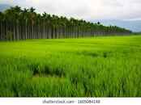
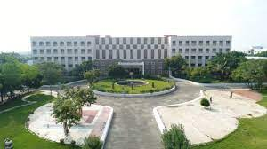

Agriculture
State Department of Agriculture is a Century old department, addressing the cropping and cropping related needs of the farming community. The vision of the department is to increase the productivity of crop and increase the income of farmers through farm level intervention.The District has a total Geographical area of 367097 Ha with net cultivated area of about 165260Ha. Coconut is the major plantation crop cultivated in an area of about 85831Ha. The other Agricultural crops cultivated are Millets, Pulses, Oilseeds, Cotton and Sugarcane.The Agriculture Department has taken up the challenge to achieve higher growth rate in agriculture by implementing several development schemes and also propagation of relevant technologies to step-up the production
Education
Coimbatore is one of the very important educational city in South India. Coimbatore is also home for many state owned universities like Tamil Nadu Agricultural University (est. 1971), Bharathiar University (1982), Anna University Coimbatore (2007) and private universities like Karunya University (1986), Avinashilingam University (1987), Amrita University (2003) and Karpagam University (2005).The agricultural school established in 1868 was converted into a full fledged agricultural university (Tamil Nadu Agricultural University) in 1971.The first college opened in Coimbatore was the Government Arts College (1875-76). The Forest College and Research Institute was opened in 1916. The first engineering college in the city was started by G.D. Naidu as the Hope College in 1945. Later it became the Government College of Technology (GCT), Coimbatore.
Industry
In Coimbatore houses a large number of small and medium texitle mills.It also has textile research institutes like the Central Institute for Cotton Research (CICR)- Southern Regional station, South Indian Textiles Research Association (SITRA) and the Sardar Vallabhai Patel International School of Textiles and Management.The city is the second largest software producer in Tamil nadu, next only to Chennai. The software development is set to take an upswing with the launch of TIDEL park and other private IT parks around the city. The IT industry in Coimbatore is nascent compared to its textile and manufacturing industries, with Tata Consultancy Services, Cognizant Technology Solutions, Robert Bosch DELL, KGISL and CSS Corp Pvt Ltd to name a few. Coimbatore is also emerging as an IT and BPO city. Coimbatore is ranked at 17th place among the global outsourcing cities